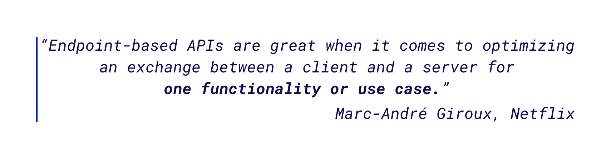
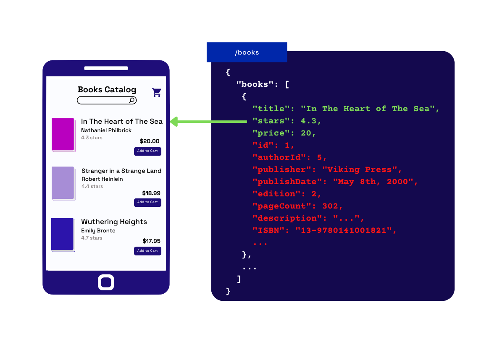
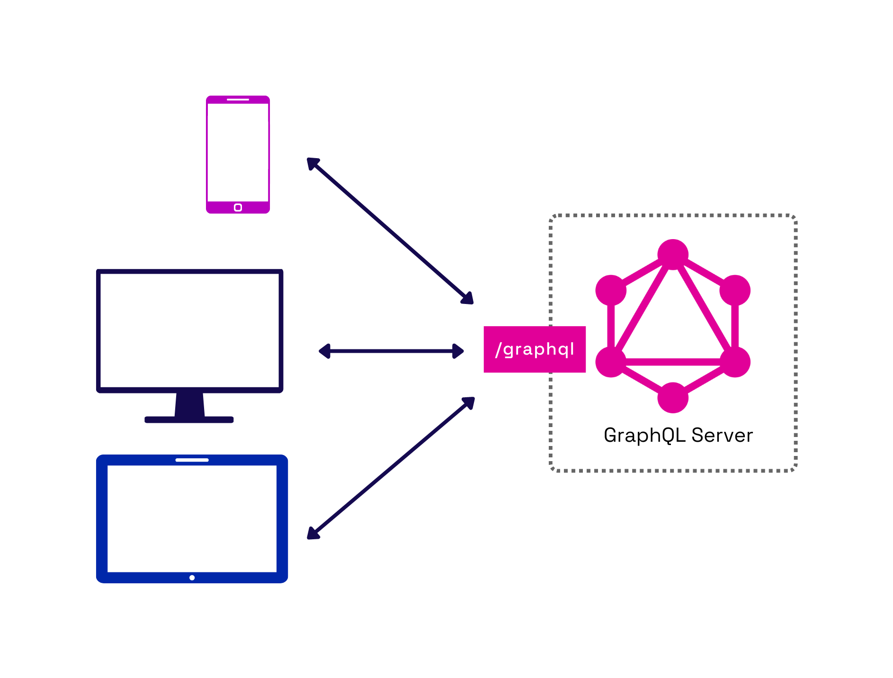
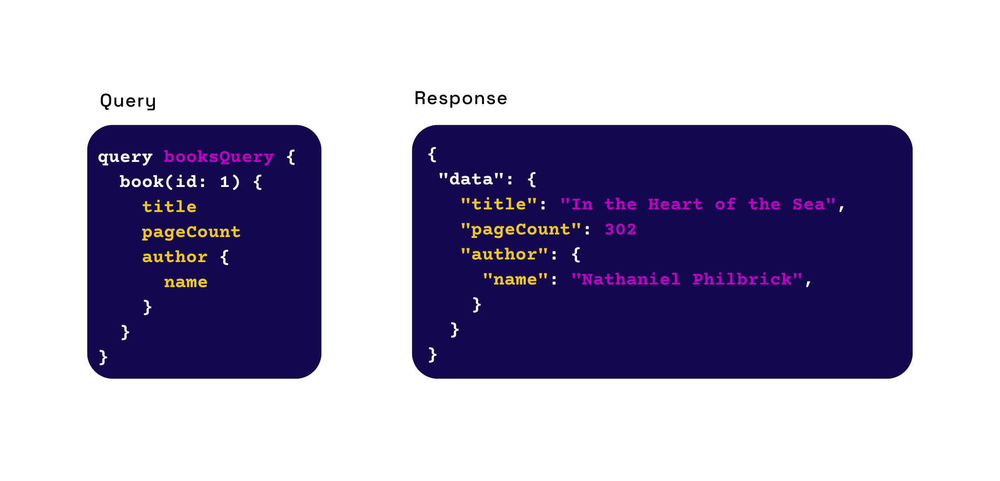
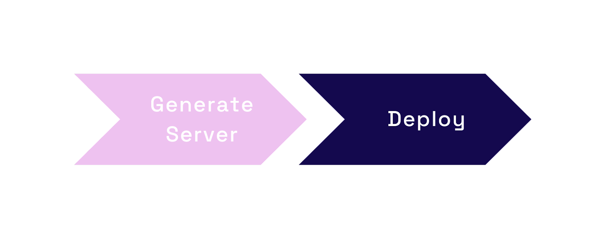

An open-source framework that generates an instant
GraphQL server from
multiple data sources
Instant GraphQL Server
Instant GraphQL Server from Nexus
A GraphQL server will be automatically generated from a user's existing Postgres database
Test The Server Locally
Test The Server Locally
Test the generated GraphQL server locally with an integrated graphical interface
Easy to Deploy
Easy to Deploy
Use Nexus's CLI to deploy all the necessary infrastructure
to Amazon Web Services (AWS) with a single command
Case Study
1. What is Nexus?
Fig.1 - Nexus is an instant GraphQL API framework
Nexus is an open-source framework that generates and deploys a GraphQL API from a user’s existing data sources. We simplify the user's setup by providing a CLI tool and admin dashboard. Data sources can be added, removed, and changed without writing any new code or schemas. Additionally, users can test the generated GraphQL API locally with an integrated graphical interface. This interface exposes the API’s documentation and serves as a playground for making test queries and viewing responses. Finally, when the API is ready to deploy, Nexus automates deployment to AWS.
In this case study, we will introduce APIs, GraphQL, and the challenges developers face when implementing GraphQL APIs. Furthermore, we discuss how and why Nexus was built and the features we hope to develop in the future. The main goal of Nexus was to efficiently deploy an auto-generated GraphQL server that connects to multiple data sources. Before diving deeper into Nexus, let’s discuss what an API is and how it can be used.
2. APIs
An API, or Application Programming Interface, is a way to share data across different systems. This is similar to how a mouse, keyboard, or screen is used as an interface to transfer data between humans and computers. An API is a layer that standardizes and abstracts the inner workings of two separate systems, allowing them to communicate fluidly. An API is a layer that standardizes and abstracts the inner workings of two separate systems, allowing them to communicate fluidly.
Fig.2 - APIs are a way to share data across systems
Web applications are commonly split into two major parts: the “frontend” and the “backend." These parts are decoupled to separate concerns. The frontend handles how a web page looks and user interaction with the page. In contrast, the backend accesses databases and handles business logic. The development workflow is optimized by decoupling, allowing separate languages, libraries, and frameworks to be used.
Once separated, the two parts need a common language to communicate with each other. An API serves as the link, allowing communication in a standardized format. Many API patterns and conventions specify how to build and design APIs for different needs. Many of them are endpoint-based, and the most common is REST.
2.1 REST
A RESTful API provides endpoints corresponding to the application's significant resources. REST utilizes the HTTP protocol to define actions that can be taken on those resources via HTTP methods. Following REST conventions, the API is standardized, typically allowing the user to infer an endpoint's intention. For example, sending a GET request to a /books endpoint would send back information on all books, whereas a GET request to /books/:id would send back information about a specific book.
Fig.3 - Example of REST API endpoints
REST has become the dominant pattern for building web application APIs. By some estimates, over 89% of APIs today follow REST conventions. One reason for its popularity is that REST is simple for developers to understand and build. It interacts well with other building blocks of web architecture, like the HTTP protocol. REST particularly shines in applications where client pages correspond directly with REST endpoints.

Although REST has many benefits, issues can arise when a new frontend use case is integrated with an existing REST API. Consider a hypothetical bookstore, a web application supported by a REST API. When a new mobile application is introduced, a few problems become more prevalent.
2.2 Under-fetching and Over-fetching Data
Due to a mobile device's limited screen size, fewer book details can be displayed on the catalog screen, and therefore less data is needed from the API to load this page. Figure 4 illustrates this difference in design between the desktop and mobile applications. Details such as publisher, publish date, and format are not part of the mobile application’s catalog page.
Fig.4 - Each client type has different data needs.
When the frontend developer fetches the data to display this page, they make a request to the pre-existing /books endpoint designed for the desktop application. Since the REST API has not yet been adapted for this new use case, the current endpoint returns information that doesn’t fit the mobile application's data needs. This is known as over-fetching. Figure 5 shows the /books endpoint’s response which has all the book information, but the mobile application doesn’t need all of that data.

Fig.5 - Over-fetching data can lead to system performance issues.
More data transferred in each request means longer wait times for the frontend to receive and process the data. Over-fetching can lead to a user experiencing higher response times, resulting in a slower page load. Sending too much data is especially problematic on mobile devices. Mobile networks have less bandwidth, which means slower data transfer. A typical page takes ~88% longer to load on mobile devices than on a desktop. This bookstore example is simplified; as applications scale, the user experience on a mobile device can degrade to the point where users may leave before the page loads.
Another part of the mobile application needs to load a cart page that lists which books a user has in their cart. Books and carts are represented by separate endpoints in the API, so the frontend developers must make multiple requests to fetch all the necessary information to load the cart. Since one endpoint doesn’t contain all the required data, they are “under-fetching.” Under-fetching can cause a “waterfall” effect of requests cascading to many more related requests, resulting in multiple round trips between the client and server.
Fig.6 - Under-fetching data can lead to additional requests to complete a page.
The time it takes for a request to be sent over the network from client to server and back is known as round-trip latency. While round-trip latency varies, it can take roughly 207ms on average. When under-fetching leads to additional unnecessary round-trips, the latency from the other requests can significantly increase page load time. Every five additional requests might lead to 1000ms of load time. Since many users will leave a page that is still loading after 10,000ms, even a handful of unnecessary requests can contribute to lost users.
Fig.7 - Round-trip latency leads to longer page load times, especially for mobile clients
Beyond application performance, over-fetching and under-fetching affect frontend developer productivity. When an API does not match their frontend client’s data needs well, developers must spend additional time orchestrating many requests and filtering unnecessary data. In some cases, dealing with data can take the majority of frontend development time, leaving little time to spend on building critical UI.
2.3 Adapting an API
Development teams faced with supporting multiple clients are not limited to using fixed endpoints that cause under-fetching and over-fetching. They can adapt their REST APIs to make them better fit each of their frontend use cases. Adding new endpoints, providing query parameters for customized requests, or versioning their API for each use case are a few options.
Fig.8 - Adjusting & creating endpoints to accommodate new client use cases
Introducing customization makes a REST API more flexible. However, these adaptations make it more complex and challenging to work with for API providers. In a recent survey by Postman, 51% of respondents reported over half of their organization’s development effort is dedicated to APIs. As the complexity grows, adapting the API can become a critical bottleneck, slowing the addition of future client use cases.
Creating and managing documentation can also take time away from the backend developer’s primary responsibilities. As the API changes and adaptations are made, the documentation becomes more challenging to maintain, requiring more time to keep up-to-date. This may not always be possible, which is why API documentation is often considered a “nice-to-have” on the priority list for providers. However, documentation is critical for API consumers, and poor or missing information about endpoints compounds the challenges faced by the frontend team.
While our hypothetical bookstore example is simplified for demonstration, in reality, the developers often need to interact with many APIs to fetch all the data they need. This means they deal with data access issues across multiple APIs and data sources, increasing the complexity and the time necessary to deal with it.
REST is widespread because it works well for applications where the API can be optimized for a use case, and data access patterns match the provided endpoints. While endpoints can be adapted in various ways to facilitate request customization, this comes at the cost of complexity and developer time. However, several vital factors may influence a team to re-consider how they structure an API:
Support is needed for frontend applications that have different bandwidth needs
Data access is nested, interrelated, recursive, or varies frequently
Data is distributed across multiple sources
A new API paradigm, GraphQL, emerged in 2015 as an option to create APIs that are highly customizable and flexible for such use cases.
3. GraphQL
Unlike multi-endpoint APIs like REST, a GraphQL API exposes a single endpoint. This difference contributes to many of the benefits GraphQL can offer.

Fig.9 - All client types query the same single endpoint
With GraphQL, each frontend client uses a single endpoint to request the required data. To support fetching multiple resources for differing client types using the same endpoint, GraphQL introduces a query language that clients use to request the data. Client-side developers no longer need to keep track of many different endpoints and their different standards. Furthermore, API developers no longer need to add new endpoints, adapt their endpoints, or version them for different client types. By moving to one endpoint, both providers and clients can save time.

Fig.10 - A query specifies the data, and the response matches the query structure
Let’s return to the hypothetical bookstore example from above. Data was over-fetched because the information needed for the desktop application differed from the mobile application. How can GraphQL fix this? A GraphQL query specifies the data a client needs, and the response structure matches that query. Queries are customizable, and the same query can fetch multiple resources simultaneously. The response will contain precisely the information requested, no more, no less. This change helps the developers save time and reduces the amount of data sent over the wire.
Fig.11 - Each client can specify the required data with custom queries
We also saw how under-fetching could lead to round-trip latency. How can GraphQL help with this? A single query can fetch all the necessary data for the client, preventing cascading waterfall requests. Developers no longer have to wait for multiple requests to make round trips to the API server. It’s important to note there may still be multiple round trips needed to fetch data from various data sources. However, these can happen from API server to data source rather than from client to server.
Fig.12 - Latency is reduced for clients and pushed to the GraphQL layer
GraphQL APIs are self-documenting and can be quickly introspected to view available query options. As a result, API providers no longer have to create and maintain documentation, which can drastically help the provider save time and improve productivity.
3.1 GraphQL Implementation Challenges
While the frontend developers enjoy the benefits of a single endpoint, the responsibility for supporting a GraphQL API falls to the backend team.
Building a GraphQL API introduces new challenges and pitfalls for API developers. First, developers must get up to speed on the GraphQL specification and learn about the unique components that make up a GraphQL server. The learning curve can be steep because GraphQL differs significantly from REST. They’ll also need to decide on an approach to writing their schema and combining them. Each approach has its tradeoffs, which can complicate the decision and slow the setup process.
Secondly, the developer must deploy their new server so that frontend clients can query the API. They will need to decide which cloud services to utilize among the many options, provision and connect their chosen services, and deploy and manage that infrastructure.
Many steps go into building and deploying an initial GraphQL server, and this process can be time-consuming, tedious, and error-prone. The process of migrating from REST or adding a GraphQL layer to an existing application can take weeks or longer.
To understand the challenge that development teams face, let’s take a closer look at what it takes to build a GraphQL API connected to multiple data sources.
3.2 Server Components
The main components of a GraphQL server are the schema and resolvers. A GraphQL schema defines the data types that can be requested and the relationships between types. Resolvers are functions that retrieve the requested data specified in the schema.
Fig.13 - Server responsibilities to support a single endpoint
A GraphQL schema comprises type definitions, which describe a queryable type within the GraphQL API. Each type includes fields that define the properties of that type, and each field can be a base type, like String or Integer. To support the graph data structure of GraphQL, fields are also used to represent associations between types. For example, a type of “Book” may have a field “author” which corresponds to an “Author” type, thus associating those two types.
The default type Query represents one entry point into the schema and actions that retrieve data. The Query type contains fields that the GraphQL schema creator defines. The GraphQL specification also includes default types of Mutation for adding or modifying data and Subscription to support streaming data with GraphQL.
Resolvers are functions that can take a GraphQL query and respond with the appropriate data for each field in the query. They are defined by the developer and specify how the data for fields in the type definitions are retrieved.
3.3 Schema Writing Approaches
Before developers can create a schema, they may choose between two approaches for schema writing: schema-first or code-first. The schema-first approach utilizes the GraphQL Schema Definition Language or SDL for short. Using SDL allows the developer to define their schema in a programming language-agnostic way.
The SDL includes syntax for defining the types that form the GraphQL data model. A schema written using the SDL provides a holistic picture of the data and associations within an application.
Since the SDL is not tied to a specific programming language, the resulting schema outlines the data model without implementation details. In a schema-first approach, the schema and resolvers are written separately. Since resolvers define how data is retrieved, they must be written in the developer’s chosen programming language.
For a code-first approach, the process begins with writing types with resolvers directly in the desired programming language. For example, using the “graphql” library in Node.js, the developer can use imported JavaScript objects to create their type definitions with fields and corresponding resolvers. In this approach, the code serves as the schema, and an SDL version can be generated from the code using scripts.
Each approach has tradeoffs. The schema-first approach divides the type definitions and resolvers, separating concerns. The singular focus makes it easier to understand and quickly share the data model. However, it involves a new language, and the SDL-defined schema is not complete on its own. Additionally, the separation of resolvers can lead to duplication requiring more maintenance over time.
Unlike the schema-first approach, the code-first approach is self-contained, which means the entire schema is defined in one place. Consequently, the overall structure of the data model can be more challenging to understand in code form.
As multiple data sources are added, the complexity of a schema grows. Many teams will opt to modularize their schema, separating each data source into its own schema. They will then need a strategy to combine them into a unified schema if they want to maintain the benefits of a single endpoint. There are several ways for the developer to implement this, but each has its own tradeoffs to consider.
GraphQL’s Schema Definition Language, type definitions, resolvers, and schema writing approaches are fundamental to building a GraphQL API from scratch. While there are libraries to ease the process, it can still take weeks for developers brand new to GraphQL.
3.4 Deployment
We’ve discussed a few challenges developers face as they learn how to build a server in this new paradigm, but building the server is only half the battle. The developer still needs to deploy the server for the frontend team to make queries. This process can be complicated and involves many steps.
When deploying their server to the cloud, there are a variety of platforms a developer might choose. We focus on the most popular Amazon Web Services, also known as AWS.
IAM User Roles
VPC
Public Subnet in VPC
Security Group for Public Subnet
EC2 Instance in Public Subnet
Routing Table
Router
Internet Gateway
Although this is a rudimentary infrastructure, it still has several resources to be provisioned. A developer must understand these resources and their related services when deploying an API from scratch.
Fig.14 - AWS Services
Currently, AWS offers 200+ services, with more added all the time. You can see an example of these services in figure 14. The sheer volume of services, plus their confusing names and acronyms, has inspired several “AWS in plain English” articles to be written that strive to explain what each service is used for and what it should have been called instead.
Once the developer learns what resources are needed, they must also make them work together. However, coordinating communication between resources can introduce bugs that take more work to troubleshoot, can be tedious for the developer, and increase the time spent getting a server running for clients to query.
Finding the right resources is only one hurdle the developer needs to overcome; they must also choose the right ones to support their architecture. This step can be complex and, if done improperly, can affect the performance of their application.
AWS provides a few different tools to assist the developer in provisioning resources. First is a graphical interface used to provision resources by hand. Next is a command line interface that can be used to provision resources by interacting with the API.
Fig.15 - AWS CLI commands to provision a single EC2 instance
Both of these tools strive to make provisioning convenient for the developer. However, they both involve dozens of sequential steps to provision and connect the different resources required. In figure 15, you can see an example of some commands that need to be run in the AWS CLI to provision a single EC2 instance. Although this is a simplified example, the documentation for EC2 alone offers 575 commands. This volume is what developers struggle with. Although having many options can be good, navigating them can also be challenging, especially for someone new to infrastructure.
In a small business or non-profit, the responsibility for managing the whole stack falls to a few developers or sometimes a single developer. The rise of mobile apps and the increasing prevalence of “smart” devices require building applications for various client types. The small team will be responsible for adding new frontend clients as needed and building the APIs to support those clients. In addition, as services are outsourced or otherwise distributed, they must deal with more internal and external data sources.
Large organizations can often afford to dedicate teams of developers to learn the GraphQL specification and implement their API in-house. Smaller organizations may decide early in their initial research that the complexity that GraphQL brings outweighs the benefits. Besides the performance benefits, the secondary goal of switching to GraphQL is to save developer time. If the time spent getting the API running is more than the time saved on the frontend, switching to GraphQL will not appear to be worth it.
Small teams can benefit from an alternative to building their own GraphQL API. As they explore the GraphQL ecosystem, they will find several existing solutions that can help make the process faster and easier.
4. Existing Solutions
Given the considerable amount of time it takes to learn and implement a GraphQL API, an alternative approach that some teams may consider is using a tool that generates their API. We looked at several options that led us to develop Nexus as an alternative to the existing solutions.
4.1 Managed Cloud Services
At the highest level of abstraction are managed cloud services like Hasura and StepZen. These are GraphQL API generators that automatically create, manage, and deploy the server for the user.
With a managed service, setup can be done in just a few minutes, and previous knowledge of GraphQL isn’t required to get an API running. Most managed services support a wide variety of data sources and offer the ability to combine data sources into a unified GraphQL layer.
However, a managed service may only support some data sources, so developers must ensure the sources they currently use are supported. If they don’t, they will either have to switch to a service that supports their required data source or start over and build their server from scratch.
Deployment is also handled entirely by the service. Automated deployment is one of the primary benefits of using a managed service, but it has some tradeoffs. Outsourcing deployment results in a lack of control over the infrastructure that supports the API. There is also no opportunity to optimize the cost of that infrastructure.
As an added benefit, managed services typically offer a robust set of additional API optimization features, like caching, monitoring, and observability. If the developer needs these other features, they can incorporate them in a few clicks, making them reasonably simple to implement.
Managed services abstract much of the complexity away from the user, leading to speed and ease of setup. However, they trade off extendability and control.
4.2 Open Source Libraries
Developers who want additional control and extendability can use several open-source GraphQL API generator libraries, like WunderGraph or GraphQL Mesh.
Generator libraries help get developers started more quickly than writing GraphQL code from scratch. However, they still require manual setup and configuration, which often involves some basic GraphQL knowledge and library-specific syntax.
Generator libraries support a wide variety of data sources. Unlike managed services, they are also highly extendable because the developer can access the generated code. For data sources that aren’t supported, the developer can extend the schema manually or with plugins.
The ability to add data sources is only one of many ways the developer can extend their server. They can also utilize plugins to add more advanced features. If there isn’t a plugin for their needs, they can manually extend their code to fit their use case. Extensibility is one of the main benefits of using open-source libraries and why a developer may choose to use them.
Although generator libraries help create the server, they do not deploy the server for the developer once it is generated. Some libraries have documentation that may include basic deployment guides for different cloud providers and architectures, but they do not typically provide direct assistance with deployment. Without deployment assistance, developers fully control their infrastructure decisions and cost. Ultimately, this comes at the expense of the developer’s time and the deployment complexity we described previously.
4.3 Nexus
Nexus is a framework for quickly generating a GraphQL API from multiple data sources and deploying the API to a user’s AWS account. We wrap several open-source tools for API generation and deployment, speeding up the configuration and use of those tools. We built Nexus for teams who would like to build and deploy a simple GraphQL API in just a few minutes, with the option to extend it over time.
Nexus uses GraphQL Mesh, a powerful GraphQL API generator, to build the user’s server. We reduced the configuration of this open-source library to a few simple commands, so no experience with GraphQL or the Mesh library is needed to get started.
Nexus currently supports three data sources: Postgres, REST APIs, and GraphQL APIs. If a data source is not supported, the user can extend their API using Mesh’s collection of additional sources or manually extend the schema.
After the server is generated, Nexus deploys the GraphQL server with a single command. We simplify deployment by abstracting away infrastructure setup and making a few decisions for the user. The deployed infrastructure is then provisioned entirely in their AWS account and is fully modifiable by the user.
Although Nexus offers many beneficial features, we don’t provide advanced options for fine-tuning the API like managed services. As a result, users have some of the benefits of extendability and ownership that come with an open-source library, along with some of the deployment abstractions of a managed service, at the cost of advanced API features. However, users can add features as needed because the generated code lives on their local machine.
5. Nexus Walkthrough
5.1 Download and Setup
Nexus is available as an NPM package. Global installation gives users access to all the commands and a local admin dashboard. Prerequisites and installation instructions are listed in the readme section of our GitHub repository.
5.2 Initializing GraphQL API Server
After installation, the user can initialize a new project with the init command. They’ll run this in an empty project folder where we’ll generate their server files. We collect a Postgres database as the primary data source. To avoid confusing bugs when the server is generated, the Postgres connection string is validated for the user when they input it.
Behind the scenes, we install the necessary packages and create the configuration files to generate and run the GraphQL server in the user’s current working directory. They now have a basic GraphQL server built from their Postgres database with a single command.
5.3 Adding Other Data Sources
Adding a second data source is similar to adding the initial Postgres database. The nexus add command will prompt the user for the data source type and then tailor subsequent prompts based on that source type. This command can add REST endpoints, a remote GraphQL API, or another Postgres database.
REST endpoints are included using a local path or remote URL to a JSON file that defines the user’s endpoints following the OpenAPI specification. Adding a GraphQL data source can be done by providing the URL of the API.
5.4 Testing the Server Locally
After the user initializes their server and adds one or more data sources, they can test their API locally by running the nexus dev command. This opens a graphical interface for exploring the unified schema and making test queries. The test server supporting this interface is identical to the server that will be deployed, so it can be used to accurately pre-plan client queries.
5.5 Deployment
Nexus simplifies the deployment process down to a single command: nexus deploy. This command handles all the complexity of packaging the server code and provisioning the infrastructure.
After a few minutes, the server is deployed to the user’s AWS account. They’ll get back a URL in the command line that they can use to query the deployed GraphQL server from any of their frontend clients.
5.6 Dashboard
Once the server is deployed, the user can use the nexus dashboard command to run a local dashboard that displays information about their API. This includes their deployed server's status, endpoint, authorization key, and current data sources. Additionally, they can add, edit, or delete data sources from their dashboard. An integrated local test server is included in the “GraphiQL” tab.
If the user makes changes to the data sources, a message will alert them to redeploy. Redeployment can be done in the dashboard with a single click or with the nexus redeploy command.
5.7 Destroy
If the user wants to remove the provisioned infrastructure at any time, they can use the destroy command to deprovision all AWS services that have been set up.
Since the infrastructure is deployed to their AWS account, they can make changes directly within the AWS console. However, the destroy command ensures all services are removed at once so the user is not charged for services that could be overlooked with manual de-provisioning.
6. Nexus Architecture
Next, we will go into the technical aspects of how Nexus was built and some of the decisions we made along the way. We can illustrate the Nexus workflow in two parts: generating the GraphQL API Server and deploying it.
6.1 Generating the Server
One of the initial problems we had to solve was generating a schema from a database. There are several libraries built for this purpose, and we initially explored one of them: Postgraphile. Postgraphile allowed us to generate a GraphQL schema from a Postgres database, but it could not generate schemas from other data sources. This was a problem because we wanted the ability to support more than one data source.
We explored using additional libraries alongside Postgraphile to accomplish our goal, but we ultimately found another library that could handle our desired use case: GraphQL Mesh. Nexus wraps Graphql Mesh to generate schemas and combine them into a unified GraphQL API. Ultimately, this allows users to have one endpoint that interacts with multiple data sources.
6.1.1 Initializing a Server and Integrating Data Sources
The main point of interaction between Nexus and Mesh is through a configuration file, where YAML is used to specify various options.
When a user interacts with the Nexus command line tool, they start by entering the init command. Behind the scenes, this command first installs necessary GraphQL Mesh packages and creates a configuration file in the user’s current working directory. Nexus prompts the user for a Postgres connection string, which is then validated using the pg-promise library to make a connection to the database. The validated database connection information is then passed to a template, which will format it into valid YAML. Lastly, the formatted YAML is supplied to the configuration file.
The add command adds additional data sources to the configuration file. The user provides data source information to Nexus, which is then formatted into YAML and supplied to the configuration file.
Once the data sources are added to the configuration file, GraphQL schemas can be created for every data source provided to it. Each data source is consumed by a source handler that introspects or gathers information about the data source. The result of introspecting each data source is an individual GraphQL schema defined using the SDL.
Schema customization, in the form of transformations, can be implemented at both the individual and unified schema levels. For example, we add an authorization middleware function to the unified schema for the user to prevent unauthorized access.
Once the schemas are generated, combined, and any modifications applied, the local GraphQL server is ready to deploy.
6.2 Deploying the Server

When a user runs nexus deploy, within a few minutes, their server is automatically deployed to an AWS infrastructure that is provisioned for them. Even though it is a simple process for the user, many things have to happen in the background for that to occur.
Since we generate the GraphQL server on the user’s local machine, we need a reliable way to deploy their application code and ensure that it runs on their AWS infrastructure. We chose to deploy using containerization. Let’s briefly discuss the process and clarify a few terms.
Nexus writes the GraphQL server code on the developer's machine. This application code has dependencies that also live on their machine. Suppose the application is transferred to a new machine; errors may occur due to the application's dependencies not being present. Containerization encapsulates the application code, libraries, and dependencies required for the software to run. Doing this allows the application to be run on different systems while reducing dependency issues.
Docker is an open-source implementation for containerization. A Docker image is like a blueprint of the application, which includes all the dependencies. We store Docker images in a repository, similar to storing source code on a remote repository like GitHub. Containers are created through images and run the actual application code. We can then pull the Docker image from a repository onto a cloud machine to run the application.
Creating and pushing a Docker image to a private repository, pulling the image down onto cloud infrastructure, and running a container from the image provided us with a code deployment workflow that helped eliminate application dependency issues between the user’s local machine and the cloud-hosted machine.
When the user runs the deploy command, we provision the AWS services to get their server up and running. We start by locally building a Docker image from their generated GraphQL server. Next, we use Terraform, an infrastructure as code tool, to create a private image repository on Amazon’s Elastic Container Registry. Terraform helps make deploying infrastructure more efficient by allowing users to provision AWS resources using code in Terraform configuration files. We considered using AWS’s service CloudFormation as an alternative to Terraform, but we wanted the ability to deploy on multiple cloud providers in the future.
The Docker image is pushed to the new repository using the AWS CLI. We also use Terraform to provision AWS Elastic Container Service and Fargate. Elastic Container Service makes managing and scaling containers easier. Fargate works alongside ECS to provision and manages all the infrastructure required to run the container, meaning the user will not have to manage the underlying EC2 instances directly. Together, they allow the developer to spend less time managing resources but still allow them to make changes or scale in the future.
One of the benefits of using ECS is that we can reference the ECR repository URL we created in the ECR Terraform configuration file during the provisioning of ECS and Fargate. This allows the server to run as soon as the instance is live with no additional configuration. That process is partially made possible by Terraform modularization. Modularization is a collection of Terraform configuration files grouped in a directory. By modularizing the configuration files, it is possible to reference details about the resources created, such as the ECR repository URL, in the ECS module. Consequently, the image pushed to the ECR is immediately running as soon as the instance is live. Figure 16 shows the high-level AWS infrastructure after deployment is complete.
Fig.16 - High-Level AWS Infrastructure after Deployment
7 Nexus Implementation Challenges
We’d now like to highlight a few of the technical challenges we encountered as we built Nexus.
7.1 Connecting Multiple Data Sources
After users have initialized their Nexus project, they have a GraphQL API that each client can query for the data they need. While each data source has been combined in the unified schema, there’s still a problem.
Data stored across multiple sources is often related. An example could be product data, such as books stored in a database, with cart information stored in Shopify. When separate data sources containing related data are combined in a generated server, the relationship across sources isn’t automatically recognized. We can still fetch information from both in a single query. However, the relationship that exists between these two sources isn’t represented in our GraphQL API.
Since we can’t shape a query that shows a relationship between the two data sources, we retrieve a response that includes the data for one cart and all books. The frontend developer would then need to filter the books required for this particular cart.
Our challenge was to find a way to help the user define these inherent relationships between data sources within their GraphQL server. If we can connect these data sources, they can be queried together. Fetching a specific cart would only yield the books for that cart, even when books come from another source.
In order to associate two data sources, we needed to capture a few pieces of information. We gather this from the user with a form on the dashboard. This form is built dynamically and prefilled with the available options based on the user’s generated schemas.
We need to know which types from two data sources the user would like to associate. To display these, we needed to load all the individual schemas and filter only the relevant types in each one. This ensures the user only sees valid options for types that can connect on the form. Here, we’ll use a cart and books to demonstrate.
Once we know the two types, we can display the available fields for each type for the user to select. These fields should represent the data association - typically an ID field stored in both data sources. In our example, the cart’s book id field is directly related to the id of a book. The user knows this, but our GraphQL server doesn’t.
Once we know how the data is associated based on the user’s selections, we can build the necessary connection within the GraphQL schema.
First, we add a new field to the user’s cart, a book. In the background, we extend the cart schema by adding a new field to the cart type with a custom type definition in the user’s configuration file. This defines the association within the GraphQL server and will allow the user to request books related to a particular cart.
Next, we need to define how to resolve this new book field. We accomplish this by adding an additional resolver within the user’s configuration file.
Now, when the user queries a cart and selects the book field, the right book data is returned.
7.2 Hot Reloading
When the user changes the server on the dashboard, as we saw with connecting two data sources, locally testing these changes is a logical next step. To assist with testing, we run a local development server accessible within the dashboard.
However, GraphQL Mesh offered no option for hot reloading this development server. We needed a way to keep the server up-to-date without forcing the user to shut down their dashboard every time they make a change, so we implemented our own hot reloading function.
Anytime the user changes to their server, such as adding, editing, or deleting a data source, that change is reflected in their configuration file.
We used the watch function from Node’s file system library to keep track of changes within the configuration file. By adding an event listener to a watch object, we could watch for changes within the GraphQL Mesh configuration file. When there is a change, the event listener executes a function that kills the running GraphiQL development server and loads a new one.
By implementing this hot reloading function, we avoid outdated information in the user’s test server and prevent them from shutting down the entire Dashboard any time they change their server.
7.3 Time To Redeploy
In addition to reloading the dashboard’s local development server on user changes, we needed a clear redeployment workflow. As users shift their focus from configuring to testing, they may forget to redeploy the changes they’ve made. To help remind them that their local server is out of sync with their deployed server, we implemented a basic change notification system.
We created a helper function within the dashboard’s backend that is invoked on every user change. This function updates an environment variable in the project folder that tracks changes.
We included logic in our React code for the dashboard that displays the alert if changes have been made and there is an active deployment. Redeployment is unnecessary if no server is deployed or changes have been made; in this case, the alert is not visible.
When there are changes and a deployed server, the user can click the corresponding button to initiate redeployment. After they initiate redeployment, we lock the dashboard’s deploy and redeploy functionality until it is successful.
In the background, the docker image is rebuilt locally. Once the image is ready, we use the AWS command line to push the new image to the user’s private image repository and then update Fargate to utilize the newest version of the image. Finally, we wait for a successful deployment and update the user’s dashboard to reflect the status.
8. Future Work
8.1 Customization of the GraphQL Schema
Allowing the user to customize their GraphQL schema would improve the quality of their server. For example, the user may have fields in a database table that they do not want to be visible in the schema. We would like to implement additional customization, such as allowing the users to toggle which fields of a database table they would like visible in their schema.
8.2 Multi-Cloud Deployment
Currently, Nexus only enables users to deploy on AWS. We would like to expand to include deployment to other cloud providers such as Google Cloud Platform, Digital Ocean, or Microsoft Azure.
8.3 Allowing Additional Data Sources
The team would like to allow more data sources that can be used when generating a server. Some data source types that we would like to include are MongoDB, SOAP APIs, gRPC APIs, and other flavors of SQL beyond Postgres.